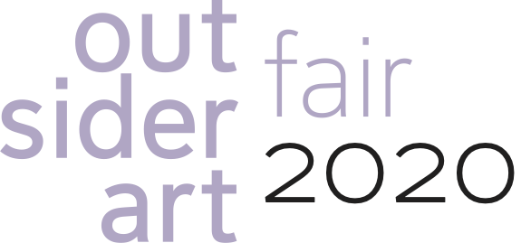
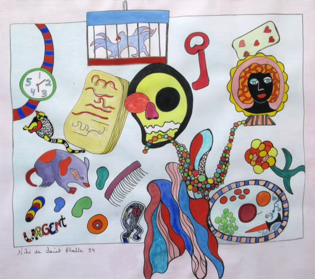
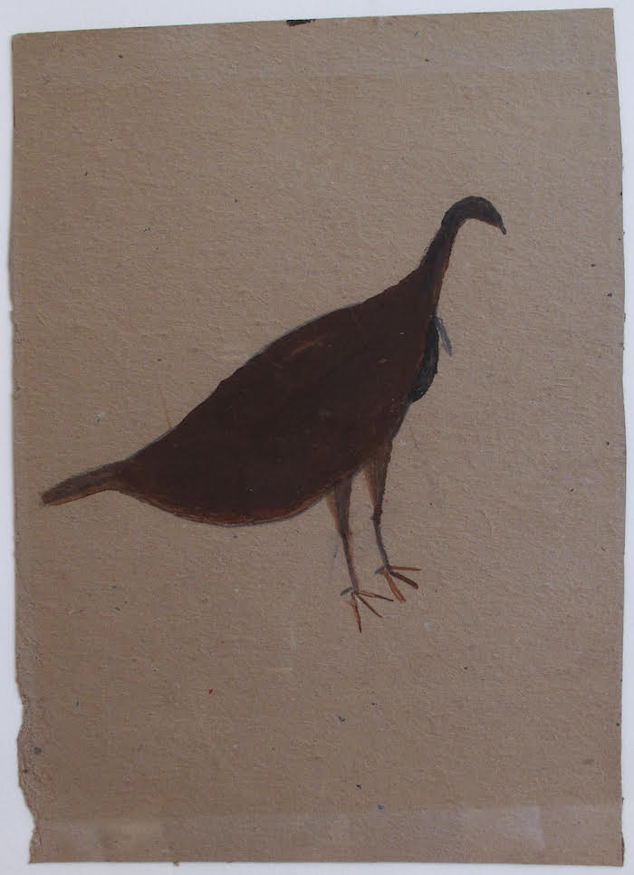
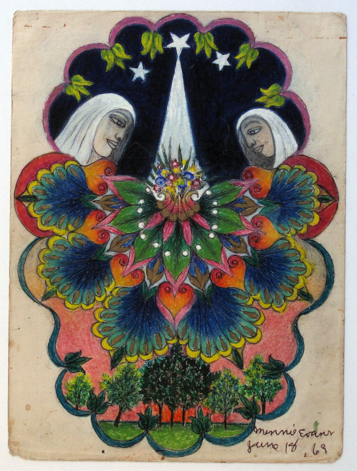
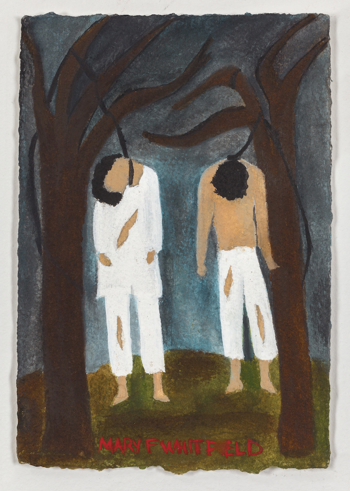
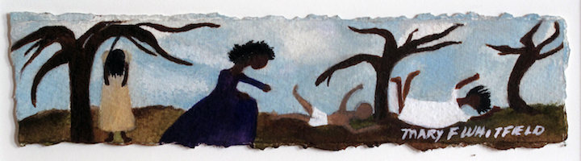
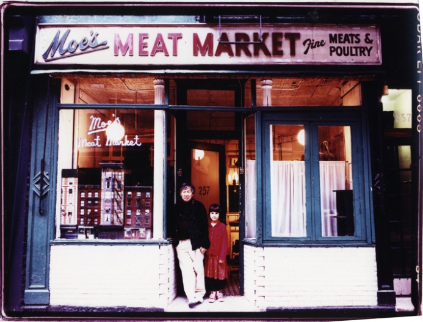

Vanitas © 1994
Niki de Saint Phalle
Outsider Art Fair
New York | January 16-19, 2020
Artists represented by Phyllis Stigliano Art Projects
Minnie Evans
Niki de Saint Phalle
Leon Thiebauld
Bill Traylor
Mary F. Whitfield
Metropolitan Pavilion, Booth A10.

Untitled (Brown Turkey), Bill Traylor, circa 1939-1942

Untitled (Night Day), Minnie Evans

Truth - It Really Happened, Mary F. Whitfield © 2002.

Why? watercolor and gouache on Arches paper,
2.25 x 6.25 inches © 2002. Photo: Ron Meisel
Mary F. Whitfield: Why? is a collaborative exhibition between Abroms-Engel Insitute for the Visual Arts, University of AL, Birmingham and the Birmingham Civil Rights Institute opening 31 May – November 2019. It will focus on the artist’s lynching paintings on loan from Phyllis Stigliano Art Projects and private collectors. The show is in conjunction with the Jefferson County Memorial Project working with the Equal Justice Initiative, Montgomery, AL.
See invite (PDF)
View The UAB News Article
View The AL News Article
Visit the Equal Justice Initiative: www.eji.org
Presented at
237 Elizabeth Street, New York, NY 10012 USA

Robert Kobayashi and his daughter Misa, 1995.
Robert Kobayashi - Retrospective
After forty years of joyous and memorable installations, Moe’s Meat Market closed 7 October 2017.